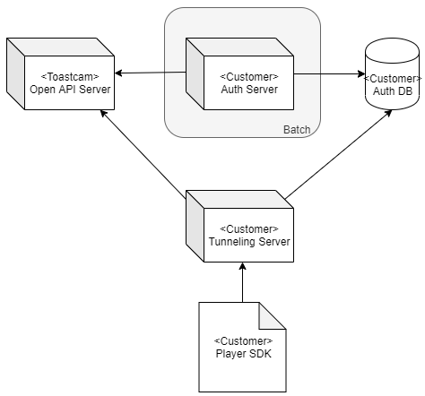
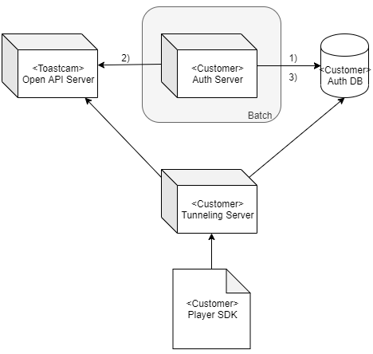
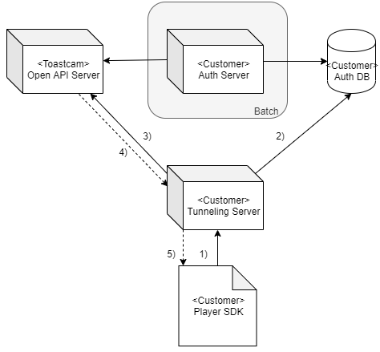

Open API > Getting Started
사전 준비
계정 등록
Open API를 사용할 토스트캠Biz 계정을 만듭니다.
- 회원가입 : https://bizcam.toast.com/
벤더아이디(vendorId) 받기
토스트캠Biz(dl_toastcamcs@nhn.com)에 Open API 사용 요청을 하여, 벤더아이디(vendorId)를 전달 받습니다.
사용 요청시 아래 정보를 포함하여 전달해주세요.
- 토스트캠Biz 계정 ID
- 인증 서버(Auth server) NAT IP 주소
서비스 구조
토스트캠에서 제안하는 서비스 구조는 아래와 같습니다.

Toastcam 제공 환경
- Open API 서버
고객사 인프라 요구사항
- 인증 DB(Auth DB) : 인증용 토큰정보를 관리할 DB 입니다. 토스트캠Biz 계정을 기준으로 아래 정보를 관리 할 수 있도록 합니다.
- 토큰(token)
- 만료일 (expirationTime)
- 인증 서버(Auth Server) : 인증 토큰 관리용 배치 서버 입니다. 배치 주기는 토큰 관리 정책 에 따라 설정하도록 합니다.
- 터널링 서버(Tunneling Server) : Player SDK와 Open API 사이에서 터널링 처리를 합니다.
- Player SDK : Video Player SDK입니다. Open API와 연결되는 터널링 서버 API Path를 옵션으로 설정해야 합니다.
인증 토큰 관리
토큰 정보를 Auth DB에 저장하고, 토큰을 주기적으로 갱신하여 토큰이 만료되지 않도록 합니다.
갱신 주기는 토큰 관리 정책을 참고하여 정하도록 합니다.

- 토큰 조회
- Auth DB에 저장된 토큰이 있는지 조회합니다.
- 토큰 발급 및 갱신 요청
- Auth DB에 저장된 토큰이 없는 경우, 신규 발급요청을 합니다.
- 저장된 토큰이 있는 경우 갱신요청을 합니다.
- Auth DB에 갱신
- 2)의 요청결과를 Auth DB에 업데이트 합니다.
터널링 처리
Player SDK와 Open API 사이에서 터널링 역할을 하는 서버를 두도록 합니다. 터널링시 인증 토큰(token)을 헤더에 포함시켜 전달합니다.

- 호출 요청
- Player SDK으로부터 Open API 호출 요청이 들어옵니다.
- 토큰 조회
- Auth DB에 저장된 토큰 정보를 가져옵니다.
- 서비스 Open API 호출
- 1)의 요청정보에 2) 에서 조회한 인증 토큰(token) 정보를 헤더에 추가 하여 Open API를 호출합니다.
아래는 영상재생정보 조회 API 호출 예시입니다. 토큰값을 x-access-token 헤더에 추가하였습니다.
- 1)의 요청정보에 2) 에서 조회한 인증 토큰(token) 정보를 헤더에 추가 하여 Open API를 호출합니다.
curl -X GET "https://openapi.toastcam.com/service/v1/cameras/AAAAA3008947/play" -H "x-access-token:토큰값"
- Open API 로부터 응답을 받습니다.
- 클라이언트(Player SDK)에 응답정보를 전달합니다.
토큰 관리 정책
- 새로 발급 또는 갱신된 토큰의 만료일(expire date)은 처리된 시간으로부터 10일 이후 입니다.
- 기존 토큰의 만료일은 현재 시점으로부터 1분 뒤로 변경이 됩니다. (만료일이 1분 보다 짧은 경우 갱신하지 않습니다.)
事前準備
ID登録
Open APIを使用するトースカムBiz IDを作成します。
ベンダーID
トースカムBiz(dl_toastcamcs@nhn.com) から Open API 使用するために、ベンダーID(vendorId) を申請します。
使用時に以下の情報も送ってください。
- トースカムBiz ID ID
- 認証 サーバー(Auth server) NAT IP アドレス
サービス構造
トースカムカムから提供するサービス構造は以下のようになります。
Toastcam 提供環境
- Open API サーバー
顧客インフラスペック
- 認証 DB(Auth DB) : 認証用トークン情報を管理するDB です。トースカムカムBiz IDを基準で以下の情報管理できるようにします。
- トークン(token)
- 満了日 (expirationTime)
- 認証サーバー(Auth Server)：認証トークン管理用バッチサーバーです。・バッチの周期は トークン管理ポリシー により設定されます。
- トンネリングサーバー(Tunneling Server)：Player SDK와 Open API 間いに トンネリング処理をします。
- Player SDK : WebRTC Player SDKです。Open APIとつながっているトンネリングサーバー API Pathをオプションで設定しなければなりません。
認証トークン管理
トークン情報を Auth DBに保存して、トークンを周期的に更新してトークンに満了しないようにします。
更新周期は トークン管理ポリシー を参照して決めます。
- トークン参照
- Auth DB に保存されたトークンがあるか参照します。
- トークン発行及び更新リクエスト
- Auth DBに保存されたトークンがない場合、新規発行リクエストをします。
- 保存されたトークンがある場合更新リクエストをします。
- Auth DBに更新
-
- のリクエスト結果を Auth DBにアップデートします。
-
トンネリング処理
Player SDKと Open API 間でトンネリングを行うサーバーを設置します。トンネリング時認証 トークン(token)をヘッダを含めて転送します。
- 呼出しリクエスト
- Player SDKから Open API 呼出しリクエストがきます。
- トークン参照
- Auth DBに保存されたトークン情報を読込みます。
- サービス Open API 呼出し
-
- のリクエスト情報に 2) から参照した認証トークン(token) 情報をヘッダに追加して Open APIを呼出しをします。
以下は映像再生情報参照 API 呼出し事例です。トークン値は x-access-token ヘッダに追加しました。
- のリクエスト情報に 2) から参照した認証トークン(token) 情報をヘッダに追加して Open APIを呼出しをします。
-
curl -X GET "https://openapi.toastcam.com/service/v1/cameras/AAAAA3008947/play" -H "x-access-token:トークン値"
- Open API からレスポンスします。
- クライアント(Player SDK)からレスポンス情報を転送します。
トークン管理ポリシー
- 新規発行または更新されたトークンの満了日(expire date)は処理された時間から10日以降です。
- 既存トークンの満了日は現在時点から1分後更新されます。（満了日が1分より短い場合は更新しません。)